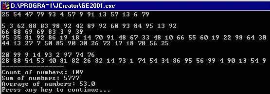
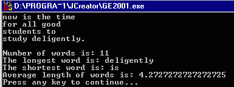
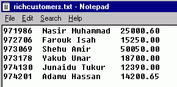

To
gain experience with:
To read input from a file, we make use of the
following classes all of which are in the java.io package:
FileReader: This is used to create an
object that can be used to read one character at a time from a file. The format is:
FileReader reader = new FileReader(“inputfile.txt”);
Notes:
·
If
the file does not exists, a FileNotFoundException is thrown.
·
If
the file is not in the current folder, the full path of the file must be
specified.
·
When
specifying the full path of the file, it is better to use forward slash. Example:
“C:/workarea/inputfile.txt”
·
The
back slash can also be used, but double slash must be used for each slash. Example: “C:\\workarea\\inputfile.txt”
However, if the file name is being read from the
user using a string variable, then only single slash is used.
·
The
important methods of the FileReader object are:
|
read() |
returns an integer corresponding to the character
read or –1 if there is no more data in the file. |
|
close() |
this closes the file. Always close a files after you finish reading from it. |
Exampe 1: The
following example reads one character at a time from a file and prints it on
the screen.
|
import
java.io.*; class
TestFileReader { public static void main(String[] args)
throws IOException { char c; int input; FileReader in
= new FileReader("inputfile.txt"); while ((input=in.read()) != -1) { c = (char) input; System.out.print(c); } System.out.println(); in.close(); } } |
BufferedReader: This can be used together with a FileReader object to read one
line at a time from a text file.
BufferedReader in = new BufferedReader(new
FileReader(“inputfile.txt”));
As we all know, the BufferedReader object has a readLine()
that returns a string. When used to
read a file, the readLine() method returns a whole line. It returns null if there is no more data in
the file.
Exampe 2: The
following example reads one line at a time from a file and prints it on the screen.
|
import
java.io.*; class
TestBufferedReader { public static void main(String[] args)
throws IOException { String s; BufferedReader
in = new BufferedReader(new FileReader("inputfile.txt")); while ((s=in.readLine()) != null) System.out.println(s); in.close(); } } |
To write or append output to a file, we make use of
the following classes of the java.io package:
FileWriter: This is used to create an
object that can be used to write one character at a time to a file. The format is:
FileWriter writer = new FileWriter(“ouputfile.txt”); //for writing
or
FileWriter writer = new FileWriter(“ouputfile.txt”, true); //for appending
Notes:
·
Unlike
the case of FileReader object, If the file does not exists, it is created
automatically. However, if there is no
writing access to the file or its folder, a FileNotFoundException is
thrown.
·
The
main methods of the FileWriter object are:
|
write(int c) |
writes the given character to the file. |
|
close() |
this closes the file. It is even more important to close an output file after its
use. |
Exampe 3: The
following example reads one character at a time from an input file and prints
it to an output file.
|
import
java.io.*; class
TestFileReader { public static void main(String[] args)
throws IOException { char c; int input; FileReader in = new
FileReader("inputfile.txt"); FileWriter
out = new FileWriter("outputfile.txt"); while ((input=in.read()) != -1) { c = (char) input; out.write(c); } System.out.println(); in.close(); out.close(); } } |
PrintWriter: The problem with the write()
method of the FileWriter object is that it can only write one character at a
time. To be able to write/append
strings, we create a PrintWriter object, making use of a FileWriter object as a parameter:
PrintWriter out = new
PrintWriter(new FileWriter(“result.txt”));
or
PrintWriter out = new
PrintWriter(new FileWriter(“result.txt”, true));
The PrintWriter object has print() and println()
methods that behave in exactly the same manner as those of System.out object.
Exampe 4: The
following example reads one line at a time from an input file and prints it to
an output file.
|
import
java.io.*; class
TestPrintWriter { public static void main(String[] args)
throws IOException { String s; BufferedReader in = new
BufferedReader(new FileReader("inputfile.txt")); PrintWriter
out = new PrintWriter(new FileWriter("outputfile.txt")); while ((s=in.readLine()) != null) out.println(s);
in.close();
out.close(); } } |
The readLine() method of the BufferedReader
object reads an entire line at a time.
However, there are many situations where we would like to break the line
into individual tokens for further processing. For example, if we read the string:
“996502 10 15 20”
we would like to break the string into the
following:
“996502” “10” “15” “20”
so that we can call the appropriate parser method to
convert the tokens to numbers.
To achieve this, Java provides the class, StringTokenizer
in the java.util package.
To use this class, we need to first create its
object using one of its constructors.
The following table shows the constructors and the
important methods of the StringTokenizer class.
|
constructors and methods |
description |
|
Assumes white space as delimiters (“
\t\n\r”) |
|
Uses the characters in the second argument as delimiters. |
|
If the third argument is true, include the delimiters are
counted as part of the tokens. |
|
Returns the next token from this tokenizer’s string |
|
Tests if there are more tokens from this tokenizer's string |
|
Returns the number of tokens remaining in this tokenizer’s
string. |
Example 5: The
following example reads ID numbers, names and grades of students in three
quizzes contained in a file, quizdata.txt and computes the average of
each student. It prints the output on
both the screen and the file, result.txt.
|
import
java.io.*; import
java.util.StringTokenizer; class
ProcessQuiz { static final int QUIZ_COUNT = 3; public static void main(String[] args)
throws IOException { BufferedReader in = new
BufferedReader(new FileReader("quizdata.txt")); PrintWriter out = new
PrintWriter(new FileWriter("result.txt")); String s, name, iDNumber; double[] quiz = new double[3]; StringTokenizer
st;
while ( (s = in.readLine()) != null) {
st = new StringTokenizer(s, "|");
iDNumber = st.nextToken();
name = st.nextToken();
System.out.print(iDNumber+"\t"+name+"\t");
out.print(iDNumber+"\t"+name+"\t");
double sum = 0;
for (int i = 0; i<quiz.length; i++) {
quiz[i] = Double.parseDouble(st.nextToken().trim());
sum += quiz[i];
System.out.print(quiz[i]+"\t");
out.print(quiz[i]+"\t");
}
System.out.println(sum/QUIZ_COUNT);
out.println(sum/QUIZ_COUNT);
}
in.close();
out.close(); } } |
Example 6: The
following example uses the data from the file, quizdata.txt, to create
an array of Student objects. It then
sends the output in two files, good.txt containing students whose
average is equal or greater than the overall average and poor.txt
containing students whose grades is below the overall average. The Student class is the same as the one
used in lab09, except it has been updated to include an instance variable name.
|
import
java.io.*; import
java.util.StringTokenizer; class
GoodAndPoor { static final int QUIZ_COUNT = 3, MAX_STUDENT_COUNT = 30; public static void main(String[] args)
throws IOException { BufferedReader in = new BufferedReader(new
FileReader("quizdata.txt")); PrintWriter good =
new PrintWriter(new FileWriter("good.txt")); PrintWriter poor =
new PrintWriter(new FileWriter("poor.txt")); Student[] student = new
Student[MAX_STUDENT_COUNT]; double [] quiz; String s, name; int iDNumber, actualStudentCount =
0; StringTokenizer st; double sum=0, average; while ( (s = in.readLine()) != null)
{
st = new StringTokenizer(s,
"|");
iDNumber =
Integer.parseInt(st.nextToken().trim());
name = st.nextToken();
quiz = new double[QUIZ_COUNT];
for (int i=0;
i<quiz.length; i++)
quiz[i] = Double.parseDouble(st.nextToken().trim());
student[actualStudentCount] = new Student(iDNumber, name, quiz);
sum +=
student[actualStudentCount].average();
actualStudentCount++;
}
average = sum/actualStudentCount;
good.println("The class average is: "+average);
good.println("\r\nStudents with grades equal or above average
are:\r\n");
poor.println("The class is: "+average);
poor.println("\r\nStudents with grades equal or above average
are:\r\n");
for (int i=0; i<actualStudentCount; i++) if (student[i].average() >=
average) good.println(student[i]); else poor.println(student[i]);
in.close();
good.close();
poor.close(); } } |
1.
The
file integerdata.txt contains integer numbers randomly arranged. Write a program that reads the data and
prints the numbers as they appear in the file both on the screen and in the
file, result2.txt. You program
should also print the count of the numbers, their sum and their average

2.
Write a program that
reads data from the file message.txt and display on the screen, the
content of the file, the number of words, the longest word, the shortest word
and the average length of the words in the file. You should not count the punctuation characters “,.;:?!” as part
of the a word.

3.
Use the class
BankAccount to write a program that creates an array of BankAccount objects
using the data contained in the file accounts.txt. Your program then prints all those customers
whole balance is greater than 10,000.00 into a file richcustomers.txt
